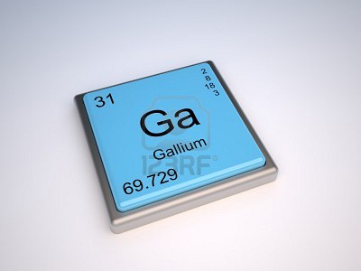

GALIO:

El galio es un metal blando, grisáceo en estado líquido y plateado brillante al solidificar, sólido deleznable a bajas temperaturas que funde a temperaturas cercanas a la del ambiente (como cesio, mercurio y rubidio) e incluso cuando se sostiene en la mano por su bajo punto de fusión (28,56 °C). El rango de temperatura en el que permanece líquido es uno de los más altos de los metales (2174 °C separan sus punto de fusión y ebullición) y la presión de vapor es baja incluso a altas temperaturas. El metal se expande un 3,1% al solidificar y flota en el líquido al igual que el hielo en el agua.
 Ir a página principal
Ir a página principal